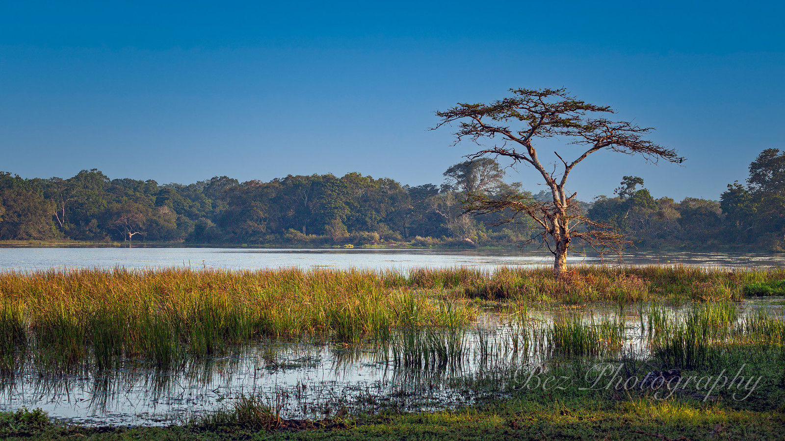
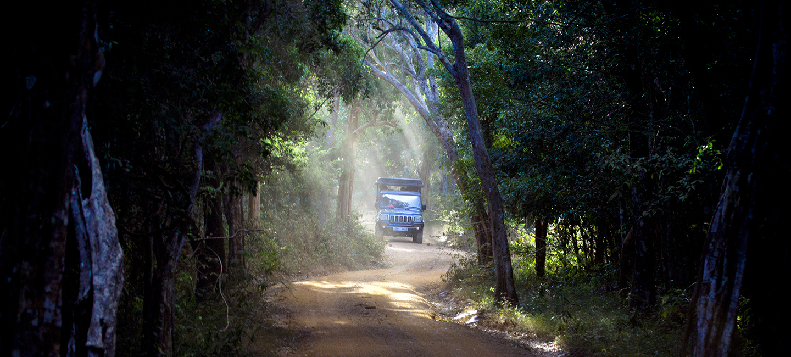
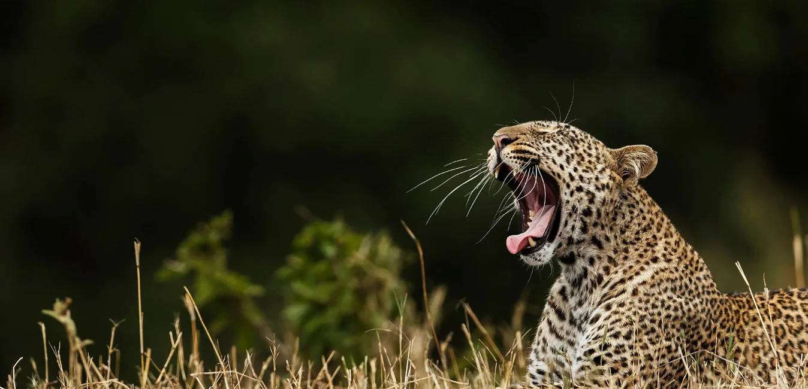
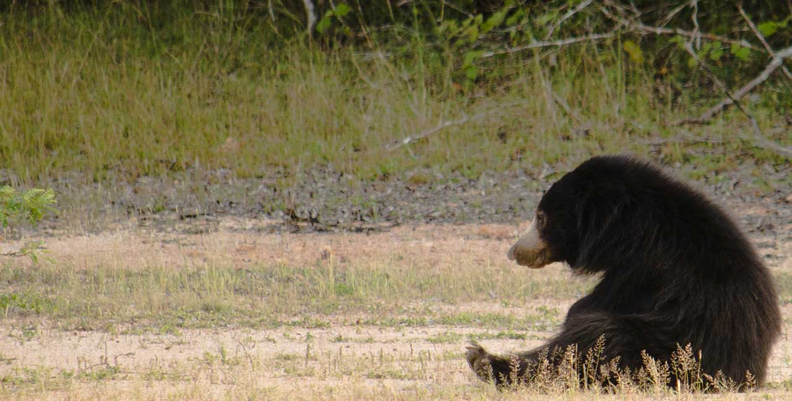
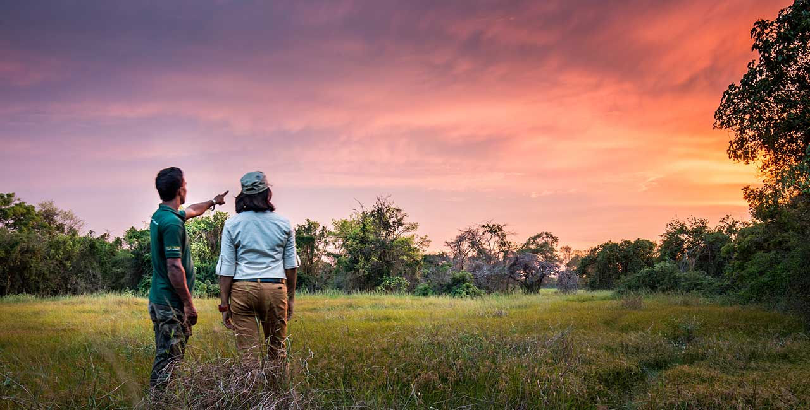
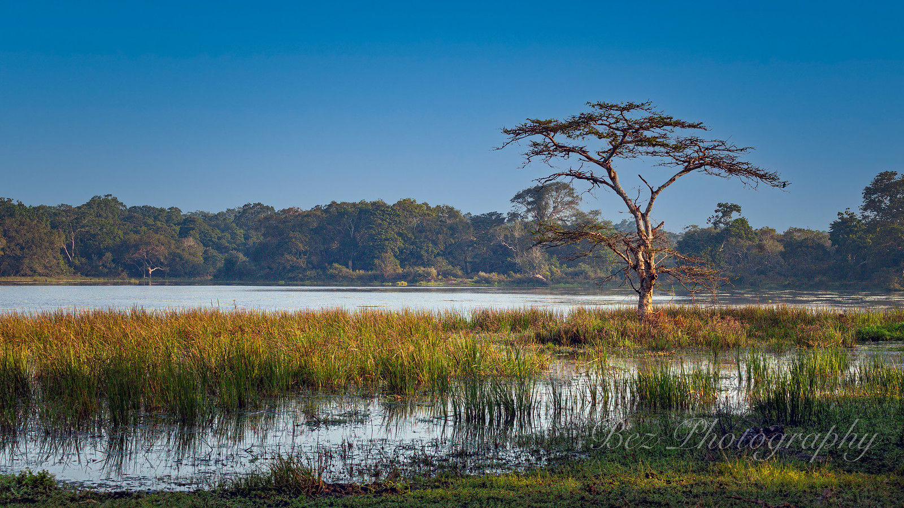
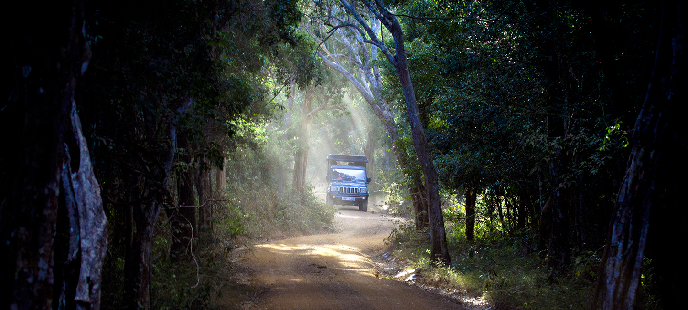
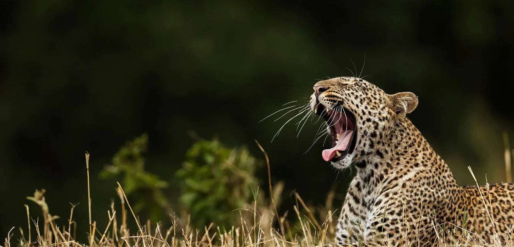
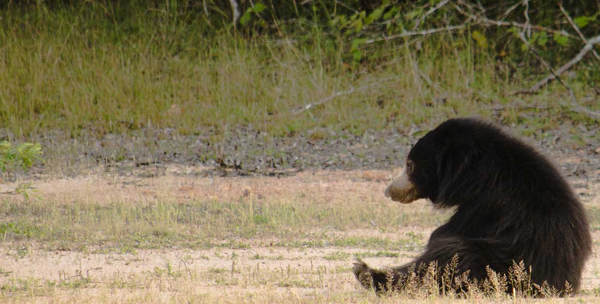
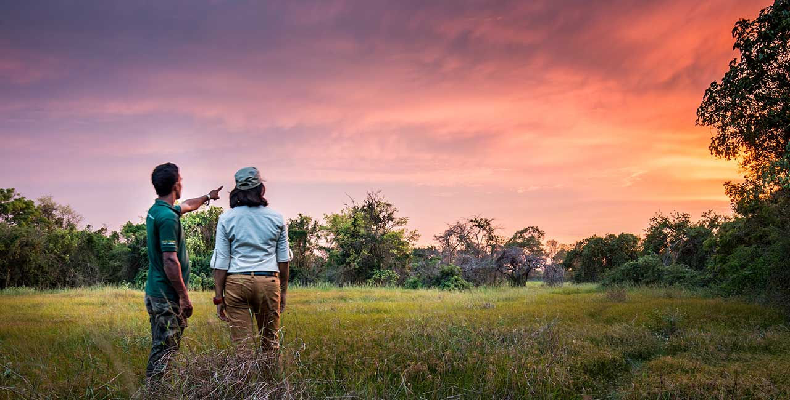
With a total area of 130,000 hectares, Wilpattu is the largest national park in Sri Lanka. It is also the oldest, having reopened after being closed for several years due to the country's armed conflict. A few decades ago, Wilpattu's leopard population made it more well-known than Yala's. One distinctive aspect of Wilpattu is the park's large, sand-rimmed natural lakes, or "Villus," which collect rainwater and draw wildlife, particularly during dry spells.
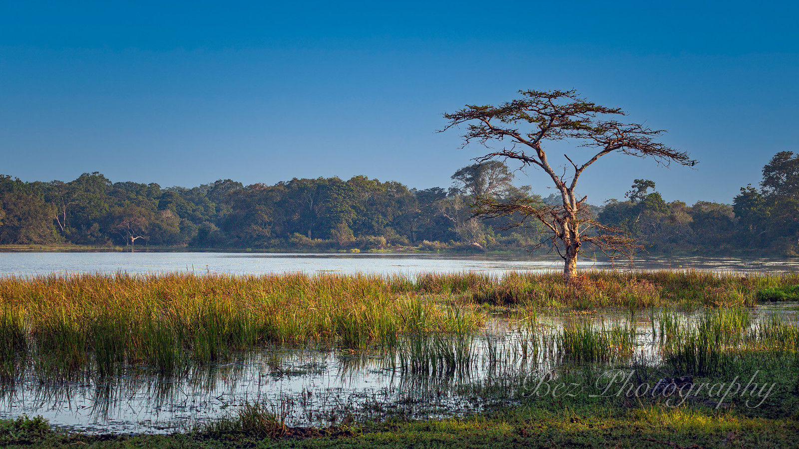
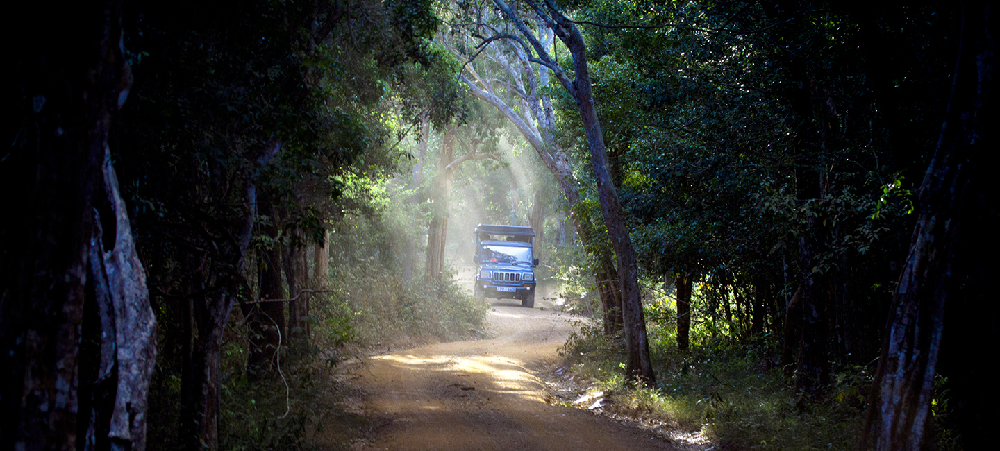
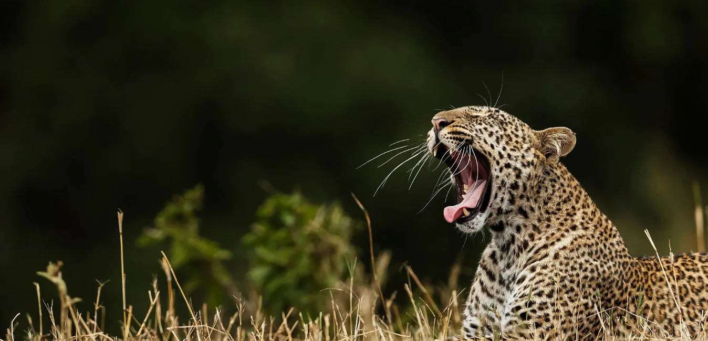
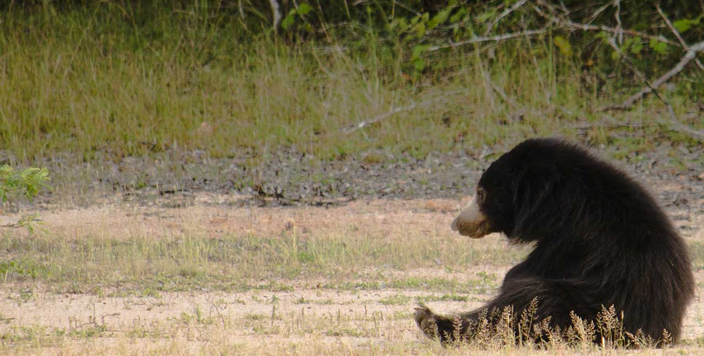
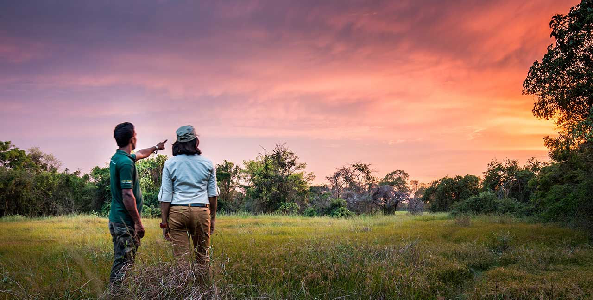
Sri Lanka is renowned for being among the top destinations in the world for the best animal attractions. Because of the Wilpattu National Park's size and soil, it has developed into one of the best places to see wildlife. Elephants from Sri Lanka, sloth bears, spotted deer, water buffaloes, and langurs all call it home. It is home to the Sri Lankan leopard, a species that draws a lot of tourists. The Sri Lankan leopard is the dominant feline species in Sri Lanka and the most elusive in the world. Leopards in Sri Lanka are more laid-back than they are anyplace else in the world, because there are no lions or tigers to endanger their status. They are frequently observed lounging in the treetops.
On Sri Lanka's northwest coast, inland, Wilpattu is situated roughly 185 km north of Colombo and 26 km north of Puttalam. It extends in the direction of Anuradhapura, the former capital. At 131, 693 hectares, the park is the largest national park in Sri Lanka, spanning the border between the North Central and North Western Provinces! The park's west boundary is 35 kilometers long and runs along Sri Lanka's northwest coast. Wilpattu became a National Park on February 25, 1938, after being designated as a wildlife refuge in 1905. Two major rivers border Wilpattu from the north and south: the Modara Gamaru to the north of the park and the Kala Oya to the south.
The Hunuwilgama Gate (Main Gate) is where the Wilpattu National Park Full Day Safari starts at 6 AM. This private safari excursion in the Wilpattu National Park includes a driver-operated jeep, park entrance fees, park taxes, and a pack of refreshments that includes fruit juice, water, and cookies. The Wilpattu safari ends at the park gate (Main gate) at 6:00 PM.
The gravel roads of Wilpattu National Park are well-maintained, especially in the areas between the water holes, which are excellent spots to see wildlife. The most notable aspect of the national park rainforest is a distinctive collection of more than fifty wetlands resembling "everglades". The campsite is perfectly located for an early-morning safari before the tourists arrive.
With a wealth of indigenous plants, animals, and fauna, the Wilpattu National Park is among Sri Lanka's best national parks.A luxurious tented safari vacation is ideal for you if you've always wanted to spend some time together among Wilpattu's amazing creations and natural surroundings. This is your home in the wilderness.